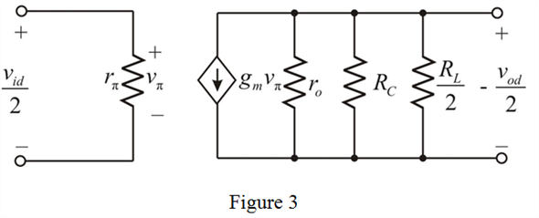
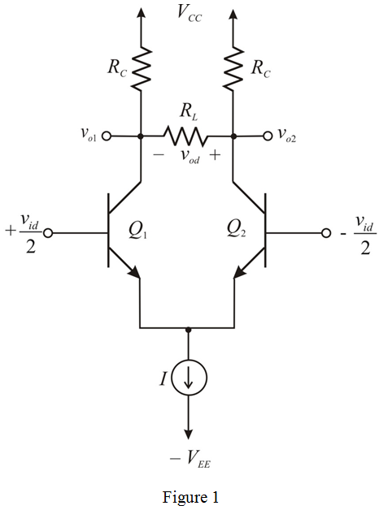
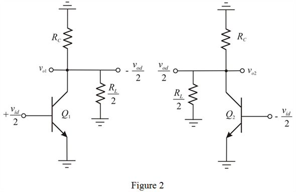
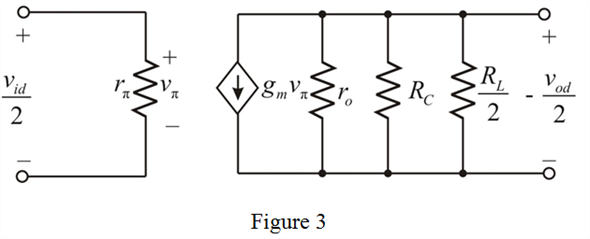

Draw the equivalent circuit model of the differential half-circuit formed by  .
.

Draw the circuit for differential amplifier.

Draw the differential half circuit of Figure 1.

Draw the equivalent circuit model of the differential half-circuit formed by .

The voltage across the resistor, is,
Apply nodal analysis at the output.
Therefore, the differential voltage gain is .